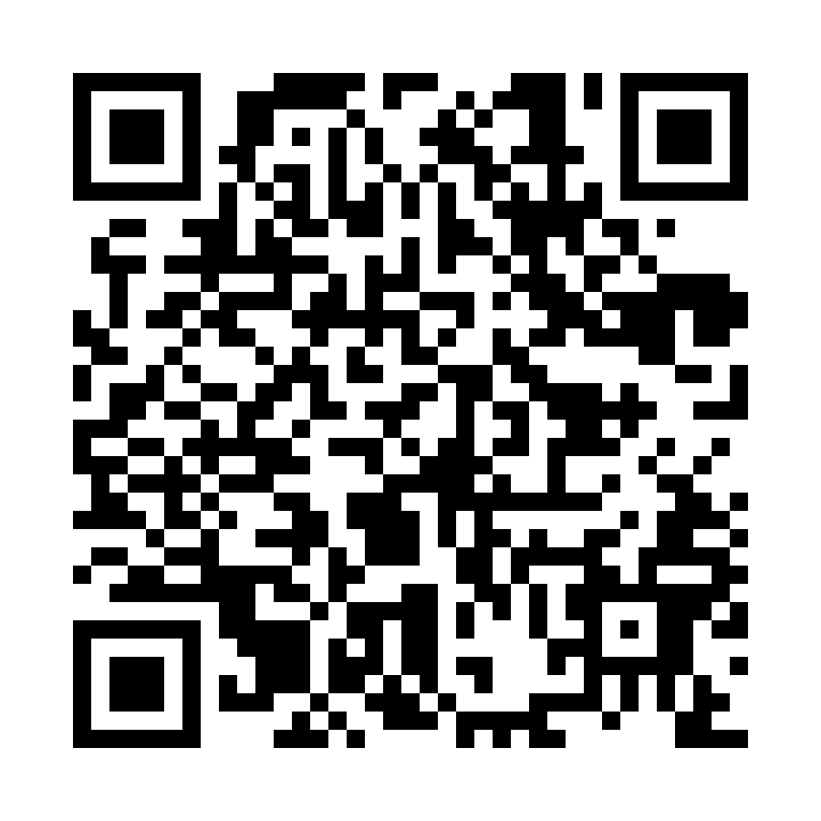

Scanne avec l’appareil photo

Ouvre l’appareil photo du téléphone, vise le carré noir et blanc, puis touche le lien qui s’affiche. Mets la luminosité de l’écran au maximum.
Le flyer sur le téléphone
Enregistre les deux faces pour les montrer ou les envoyer plus tard.